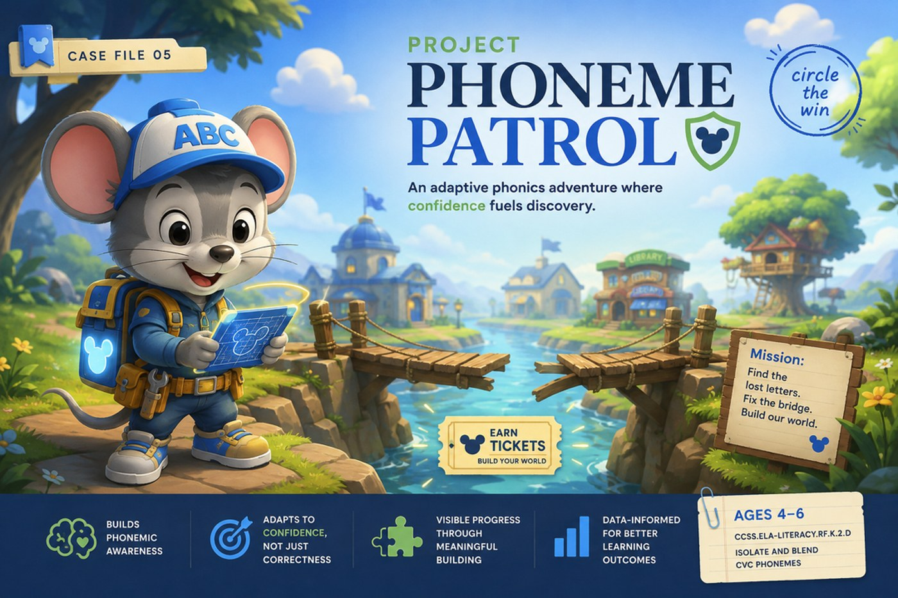
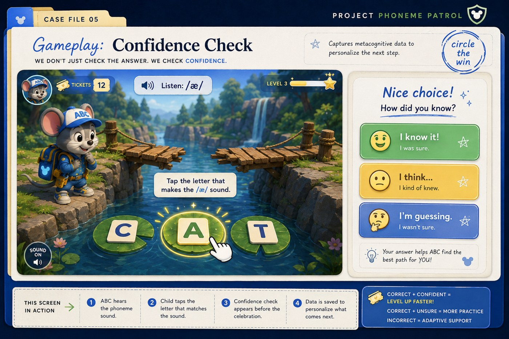
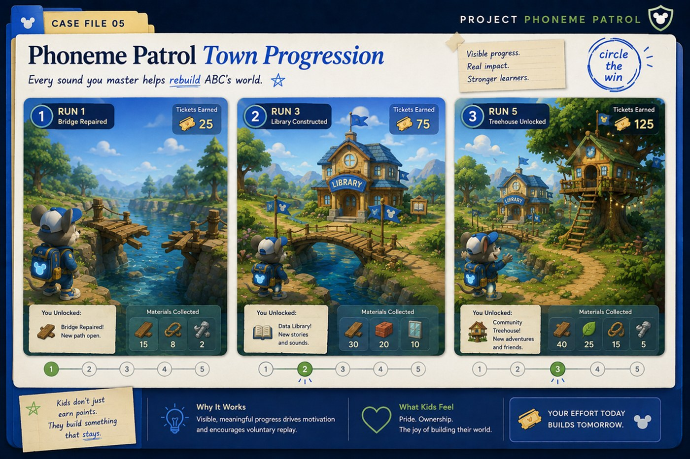
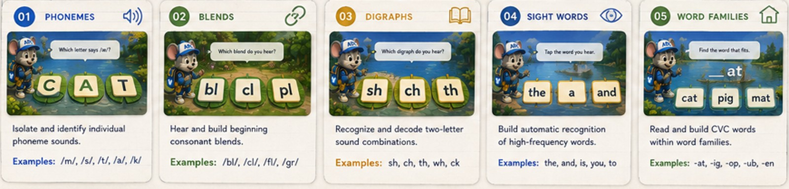

A phonics adventure for ages 4–6 that measures more than right or wrong — it reads how sure a child is, and quietly adapts the path forward.

Accuracy alone can't tell the difference between a child who's genuinely struggling and one who froze, guessed, or quietly disengaged — they look identical on paper. That's the gap this concept is designed to close.
What if the game measured how sure a child was — not just whether they were right?
Before ABC celebrates, the child answers one more question: I know it, I think so, or I'm guessing? That single tap is what the rest of the system runs on.

Celebrates and moves forward, but flags a similar phoneme to resurface later in the session — no visible penalty, just spaced practice.
Bypasses repetitive foundational reps and accelerates difficulty, so a confident learner never gets bored waiting for the game to catch up.
A confident wrong answer is the strongest misconception signal in the system — it triggers a visual hint before frustration has a chance to set in.
Materials earned from each phoneme run go straight into rebuilding ABC's town — a bridge, a library, a treehouse. Visible, permanent change beats an abstract coin counter for this age group.

The theme choice, the confidence-check layer, and the adaptation logic never change. Only the content underneath swaps — so a new phoneme set, blend, or sight-word skill ships without new code.

No timers. Protects completion for slower-processing profiles.
Audio-first. Emerging readers navigate without needing an adult.
One-tap interactions. No drag-and-drop for early motor control.
Short, focused rounds. Matched to a 4–6-year-old's attention span.
Player autonomy. ABC chooses their environment before a single lesson starts — feeling in control up front drives engagement.
Data that empowers. Insights educators and families can actually use.